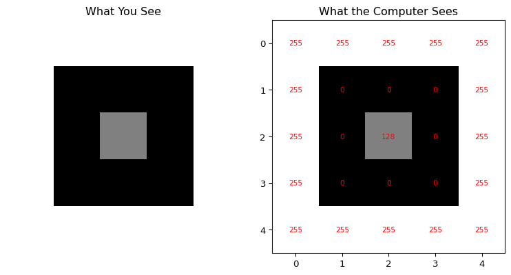
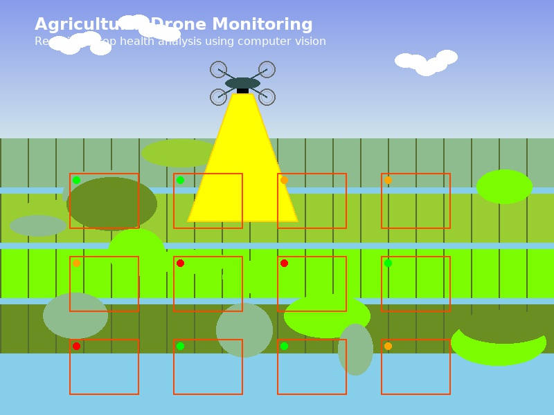

Imagine you’re teaching a friend to recognize your cat in photos. You’d point out the whiskers, the pointed ears, maybe that distinctive patch of white fur. Now imagine doing the same thing with a computer—except the computer doesn’t understand “whiskers” or “cute.” It only sees numbers.
That’s exactly what computer vision is: teaching machines to understand and interpret visual information the way humans do.
Tip
Try it yourself! Open this interactive Colab notebook to see computer vision in action as we build this tutorial series.
0.2 The Story That Started It All
Picture this: You’re showing your grandmother a photo on your phone. Within milliseconds, she says, “Oh, that’s your cat Whiskers sitting on the windowsill!” But if you asked a computer the same question just 15 years ago, it would have been completely stumped.
Today? Your phone can not only recognize your cat but also tell you the breed, suggest similar photos, and even create a cute slideshow. How did we get here?
That’s the magic of computer vision – teaching machines to see and understand the world like we do.
0.3 What Is Computer Vision, Really?
Computer vision is like giving a computer a pair of eyes and teaching it to understand what it sees. But here’s the fascinating part: while you can instantly recognize a cat, a computer sees this:
A dog is trying to eat chocolate
In less than a second, your brain processed: - There’s a dog - He is trying to eat a chocolate
But to a computer, this image is just a grid of numbers. Our job is to bridge that gap.
0.4 Your First Taste: What Does a Computer See?
Let’s peek behind the curtain. Here’s what an image looks like to a computer:
Code
import numpy as npimport matplotlib.pyplot as plt# Create a simple 5x5 "image" (just numbers!)simple_image = np.array([ [255, 255, 255, 255, 255], [255, 0, 0, 0, 255], [255, 0, 128, 0, 255], [255, 0, 0, 0, 255], [255, 255, 255, 255, 255]])# Show it as an imageplt.figure(figsize=(8, 4))plt.subplot(1, 2, 1)plt.imshow(simple_image, cmap='gray')plt.title("What You See")plt.axis('off')plt.subplot(1, 2, 2)plt.imshow(simple_image, cmap='gray')plt.title("What the Computer Sees")for i inrange(5):for j inrange(5): plt.text(j, i, str(simple_image[i, j]), ha='center', va='center', color='red', fontsize=8)plt.tight_layout()plt.show()print("The computer sees this as a 5x5 grid of numbers:")print(simple_image)

The computer sees this as a 5x5 grid of numbers:
[[255 255 255 255 255]
[255 0 0 0 255]
[255 0 128 0 255]
[255 0 0 0 255]
[255 255 255 255 255]]
Mind = Blown! 🤯 The computer doesn’t see a “smiley face”—it sees a pattern of numbers. But with the right algorithms, those numbers become meaningful.
0.5 The “Aha!” Moment: Why This Matters
Computer vision isn’t just academic curiosity. It’s changing the world right now:
0.5.1 🚗 Self-Driving Cars
Self-driving car
Tesla’s cars process 36 images per second from 8 cameras to navigate roads, recognize traffic signs, and avoid pedestrians.
0.5.2 🏥 Medical Diagnosis
Medical scan
Computer vision can detect cancer in medical scans with higher accuracy than human doctors. Google’s DeepMind can diagnose over 50 eye diseases just from retinal photos.
0.5.3 📱 Your Daily Life
Unlocking your phone with Face ID
Google Photos organizing your pictures
Instagram filters that put bunny ears on your head
0.5.4 🌾 Agriculture Revolution

Agricultural drone monitoring crops
Drones equipped with computer vision can identify diseased crops, count plants, and optimize irrigation—increasing yields by 20-30%.
0.6 The Beautiful Challenge
Here’s what makes computer vision fascinating: It’s both incredibly simple and mind-bogglingly complex.
Simple because the goal is clear: help computers understand images.
Complex because human vision is the result of millions of years of evolution, and we’re trying to replicate it with math and code.
0.7 The Journey We’re Taking Together
In this series, we’ll follow Jeremy Howard’s fastai approach: start with working code, build intuition, then dive deeper.
Learning path visualization
0.7.1Phase 1: Understanding the Basics (Posts 1-2)
How images are stored as numbers
Basic operations (resize, crop, rotate)
Your first “Hello, Computer Vision!” program
0.7.2Phase 2: Classical Techniques (Posts 3-5)
Finding edges and shapes
Detecting objects the “old school” way
Feature extraction and matching
0.7.3Phase 3: Deep Learning Revolution (Posts 6-7)
Why neural networks changed everything
Using pre-trained models (the smart shortcut)
Modern foundation models like DINOv2
0.7.4Phase 4: Building Your Future (Posts 8-9)
Your complete computer vision project
Career paths and next steps
0.8 The Pareto Principle in Action
Here’s our secret weapon: The 80/20 rule.
80% of computer vision tasks use just 20% of the available techniques
80% of your results will come from 20% of your effort
80% of real-world applications use pre-trained models (not custom training)
We’ll focus on that crucial 20% that gives you maximum impact.
0.9 What You’ll Build
By the end of this series, you’ll have: - ✅ A complete understanding of how images work as data - ✅ Hands-on experience with OpenCV and modern deep learning - ✅ A working web app that combines classical and modern CV techniques - ✅ The foundation to build your own computer vision projects
0.10 The Tools of the Trade
We’ll use the same tools that professionals use:
Python: The language of choice for computer vision
OpenCV: The Swiss Army knife of image processing
PyTorch: For deep learning magic
Google Colab: Free GPU power for everyone
HuggingFace: Pre-trained models made easy
Don’t worry if these names sound scary – we’ll introduce each one gently.
0.11 A Personal Promise
I promise you this: Every concept will be explained with simple analogies.
Neural networks? Think of them as very picky art critics.
Convolutions? Imagine sliding a magnifying glass over a photo.
Transfer learning? Like learning to drive a truck after you know how to drive a car.
0.12 Your First Assignment (Optional but Fun!)
Before we dive into code, try this thought experiment:
Take a photo with your phone
Look at it for 5 seconds
Write down everything you can see
Now imagine explaining each item to someone who has never seen the world
That list you just made? That’s what we’re teaching computers to do.
0.13 Key Takeaways
Computer vision = teaching machines to understand images
Images are just arrays of numbers (but meaningful ones!)
Start with working code, build intuition, then understand theory
Real applications are already changing the world
You can build amazing things with surprisingly little code
---title: "Why Computer Vision? Teaching a Robot to See"author: "Hasan"date: 2025-01-15categories: [Computer Vision, AI, Machine Learning, OpenCV, Deep Learning]tags: [Computer Vision, Image Processing, AI, Tutorial, Beginner]image: "https://images.unsplash.com/photo-1526374965328-7f61d4dc18c5?ixlib=rb-4.0.3&ixid=M3wxMjA3fDB8MHxwaG90by1wYWdlfHx8fGVufDB8fHx8fA%3D%3D&auto=format&fit=crop&w=2070&q=80"toc: trueseries: name: "Computer Vision Foundations" number: 1format: html: defaultjupyter: python3---## The Magic Moment: When Machines Learn to SeeImagine you're teaching a friend to recognize your cat in photos. You'd point out the whiskers, the pointed ears, maybe that distinctive patch of white fur. Now imagine doing the same thing with a computer—except the computer doesn't understand "whiskers" or "cute." It only sees numbers.That's exactly what computer vision is: **teaching machines to understand and interpret visual information the way humans do**.:::{.callout-tip}**Try it yourself!** Open this [interactive Colab notebook](https://colab.research.google.com/github/hasanpasha/quarto_blog_hasan/blob/main/notebooks/cv-foundations-01-why-computer-vision.ipynb) to see computer vision in action as we build this tutorial series.:::## The Story That Started It AllPicture this: You're showing your grandmother a photo on your phone. Within milliseconds, she says, "Oh, that's your cat Whiskers sitting on the windowsill!" But if you asked a computer the same question just 15 years ago, it would have been completely stumped.Today? Your phone can not only recognize your cat but also tell you the breed, suggest similar photos, and even create a cute slideshow. **How did we get here?**That's the magic of computer vision – teaching machines to see and understand the world like we do.## What Is Computer Vision, Really?Computer vision is like giving a computer a pair of eyes and teaching it to understand what it sees. But here's the fascinating part: while you can instantly recognize a cat, a computer sees this:In less than a second, your brain processed:- There's a dog- He is trying to eat a chocolateBut to a computer, this image is just a grid of numbers. **Our job is to bridge that gap.**## Your First Taste: What Does a Computer See?Let's peek behind the curtain. Here's what an image looks like to a computer:```{python}#| eval: trueimport numpy as npimport matplotlib.pyplot as plt# Create a simple 5x5 "image" (just numbers!)simple_image = np.array([ [255, 255, 255, 255, 255], [255, 0, 0, 0, 255], [255, 0, 128, 0, 255], [255, 0, 0, 0, 255], [255, 255, 255, 255, 255]])# Show it as an imageplt.figure(figsize=(8, 4))plt.subplot(1, 2, 1)plt.imshow(simple_image, cmap='gray')plt.title("What You See")plt.axis('off')plt.subplot(1, 2, 2)plt.imshow(simple_image, cmap='gray')plt.title("What the Computer Sees")for i inrange(5):for j inrange(5): plt.text(j, i, str(simple_image[i, j]), ha='center', va='center', color='red', fontsize=8)plt.tight_layout()plt.show()print("The computer sees this as a 5x5 grid of numbers:")print(simple_image)```**Mind = Blown!** 🤯 The computer doesn't see a "smiley face"—it sees a pattern of numbers. But with the right algorithms, those numbers become meaningful.## The "Aha!" Moment: Why This MattersComputer vision isn't just academic curiosity. It's changing the world right now:### 🚗 **Self-Driving Cars**Tesla's cars process **36 images per second** from 8 cameras to navigate roads, recognize traffic signs, and avoid pedestrians.### 🏥 **Medical Diagnosis** Computer vision can detect cancer in medical scans with **higher accuracy than human doctors**. Google's DeepMind can diagnose over 50 eye diseases just from retinal photos.### 📱 **Your Daily Life**- Unlocking your phone with Face ID- Google Photos organizing your pictures- Instagram filters that put bunny ears on your head### 🌾 **Agriculture Revolution**Drones equipped with computer vision can identify diseased crops, count plants, and optimize irrigation—**increasing yields by 20-30%**.## The Beautiful ChallengeHere's what makes computer vision fascinating: **It's both incredibly simple and mind-bogglingly complex.**Simple because the goal is clear: help computers understand images.Complex because human vision is the result of millions of years of evolution, and we're trying to replicate it with math and code.## The Journey We're Taking TogetherIn this series, we'll follow Jeremy Howard's fastai approach: **start with working code, build intuition, then dive deeper**.### **Phase 1: Understanding the Basics (Posts 1-2)**- How images are stored as numbers- Basic operations (resize, crop, rotate)- Your first "Hello, Computer Vision!" program### **Phase 2: Classical Techniques (Posts 3-5)** - Finding edges and shapes- Detecting objects the "old school" way- Feature extraction and matching### **Phase 3: Deep Learning Revolution (Posts 6-7)**- Why neural networks changed everything- Using pre-trained models (the smart shortcut)- Modern foundation models like DINOv2### **Phase 4: Building Your Future (Posts 8-9)**- Your complete computer vision project- Career paths and next steps## The Pareto Principle in ActionHere's our secret weapon: **The 80/20 rule.**- 80% of computer vision tasks use just 20% of the available techniques- 80% of your results will come from 20% of your effort- 80% of real-world applications use pre-trained models (not custom training)We'll focus on that crucial 20% that gives you maximum impact.## What You'll BuildBy the end of this series, you'll have:- ✅ A complete understanding of how images work as data- ✅ Hands-on experience with OpenCV and modern deep learning- ✅ A working web app that combines classical and modern CV techniques- ✅ The foundation to build your own computer vision projects## The Tools of the TradeWe'll use the same tools that professionals use:- **Python**: The language of choice for computer vision- **OpenCV**: The Swiss Army knife of image processing- **PyTorch**: For deep learning magic- **Google Colab**: Free GPU power for everyone- **HuggingFace**: Pre-trained models made easyDon't worry if these names sound scary – we'll introduce each one gently.## A Personal PromiseI promise you this: **Every concept will be explained with simple analogies.** - Neural networks? Think of them as very picky art critics.- Convolutions? Imagine sliding a magnifying glass over a photo.- Transfer learning? Like learning to drive a truck after you know how to drive a car.## Your First Assignment (Optional but Fun!)Before we dive into code, try this thought experiment:1. Take a photo with your phone2. Look at it for 5 seconds3. Write down everything you can see4. Now imagine explaining each item to someone who has never seen the worldThat list you just made? That's what we're teaching computers to do.## Key Takeaways- **Computer vision = teaching machines to understand images**- **Images are just arrays of numbers** (but meaningful ones!)- **Start with working code, build intuition, then understand theory**- **Real applications are already changing the world**- **You can build amazing things with surprisingly little code**## What's Next?In our next post, [**"Images as Data: The Digital Lego Blocks"**](02-images-as-data.qmd), we'll:- Load our first image with Python- Explore how colors become numbers - Play with pixels like digital Lego blocks- Create our first simple image filter:::{.callout-note}**Ready to dive deeper?** Click [here for the interactive Colab notebook](https://colab.research.google.com/github/hasanpasha/quarto_blog_hasan/blob/main/notebooks/cv-foundations-01-why-computer-vision.ipynb) where you can run all the code examples and experiment with your own images!:::---**Next up**: [Images as Data: The Digital Lego Blocks →](02-images-as-data.qmd)**Series Navigation**: [← Back to CV Foundations Overview](../computer-vision-foundations.qmd)